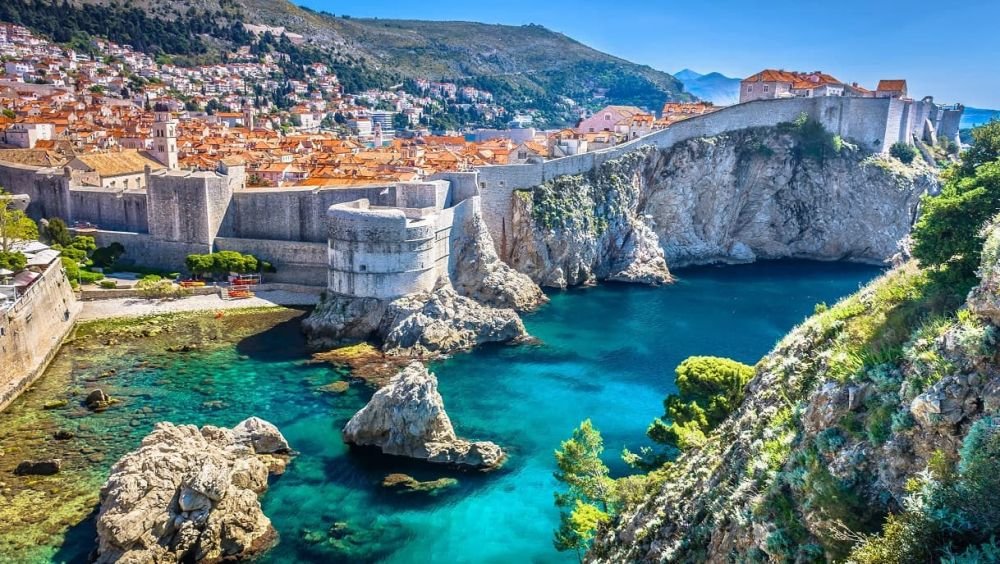

Descoperă orașul Dubrovnik - O călătorie în Croația
Dubrovnik este un oraș istoric și impresionant din Croația, oferind o varietate de atracții de neuitat pentru vizitatori:
-

Zidurile orașului Dubrovnik - Istorice și panoramice
Explorează faimoasele ziduri ale orașului, care oferă panorame uimitoare ale orașului și mării Adriatice.
-

Centrul vechi al orașului Dubrovnik - Bijuterie arhitecturală
Înconjurat de ziduri, centrul vechi al orașului găzduiește străzi înguste, piețe pline de viață și arhitectură istorică.
-

Fortărețele din Dubrovnik - Monumente de apărare
Vizitează fortărețele medievale ce au jucat un rol important în istoria orașului.
-

Telecabina din Dubrovnik - Panorame aeriene
Urcați cu telecabina pe Muntele Srđ pentru priveliști spectaculoase asupra orașului și mării.
-

Plajele din Dubrovnik - Relaxare la malul mării
Bucurați-vă de plajele frumoase și apele cristaline ale Mării Adriatice.
Concluzii
Dubrovnik este un oraș fascinant ce îmbină istoria cu peisajele spectaculoase, oferind o experiență de neuitat.